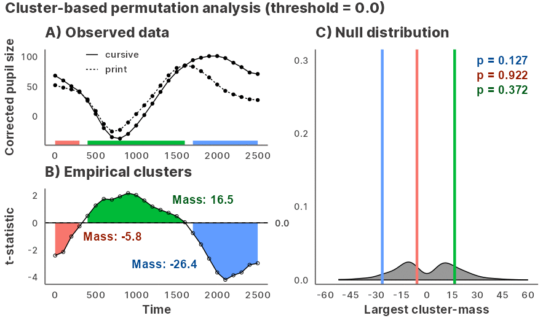

Julia GLM.jl and MixedModels.jl implementation of bootstrapped cluster-based permutation analysis for time series data, powered by JuliaConnectoR.

Animation of a cluster-based permutation test where each frame steps through a range of t-thresholds.
Installation
You can install the development version of jlmerclusterperm from GitHub with:
# install.packages("remotes")
remotes::install_github("yjunechoe/jlmerclusterperm")Using jlmerclusterperm requires a prior installation of Julia, which can be downloaded from either the official website or using the command line utility juliaup. Julia version >=1.8 is required and >=1.9 is preferred for its substantial compiler/runtime improvements.
Before using functions from jlmerclusterperm, an initial setup step is required via calling jlmerclusterperm_setup(). This will launch Julia with some number of threads (controlled via options("jlmerclusterperm.nthreads")) and install necessary package dependencies (this only happens once and should take about 15-30 minutes).
Subsequent calls to jlmerclusterperm_setup() incur a small overhead of around 30 seconds and there will be slight delays for first-time function calls due to Julia’s just-in-time compilation. Afterwards you can enjoy blazingly-fast functions from the package.
# Both lines must be run
library(jlmerclusterperm)
system.time(jlmerclusterperm_setup(verbose = FALSE))
#> user system elapsed
#> 0.02 0.02 23.07